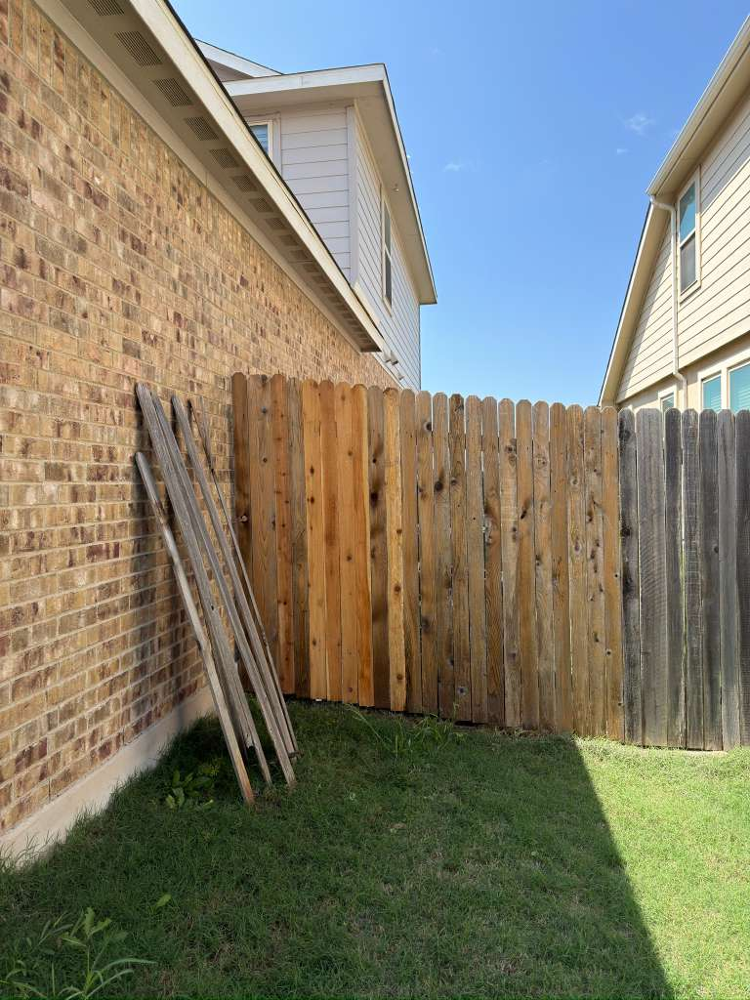
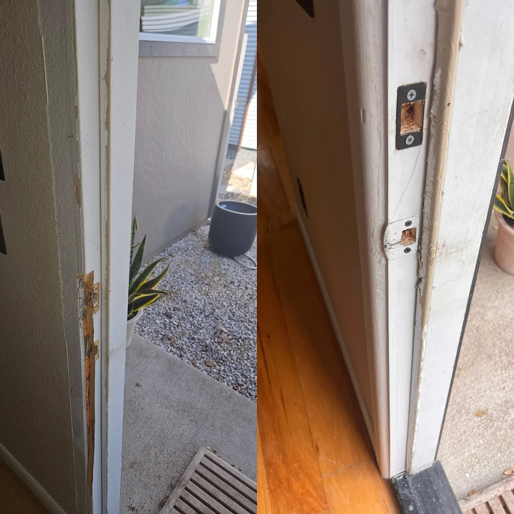
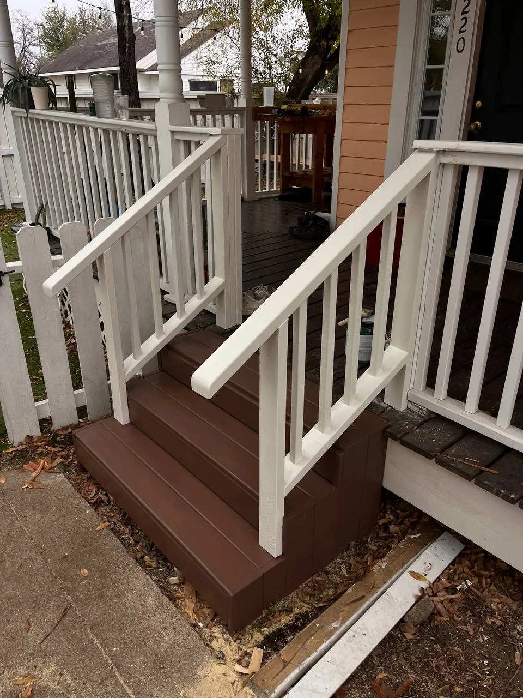
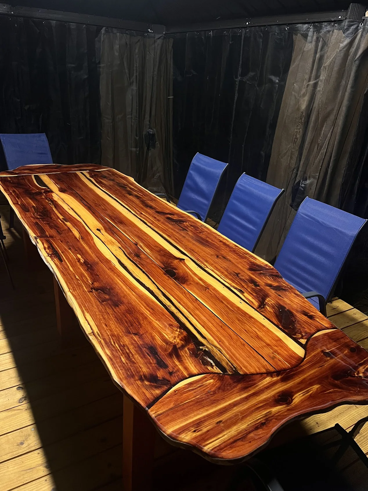
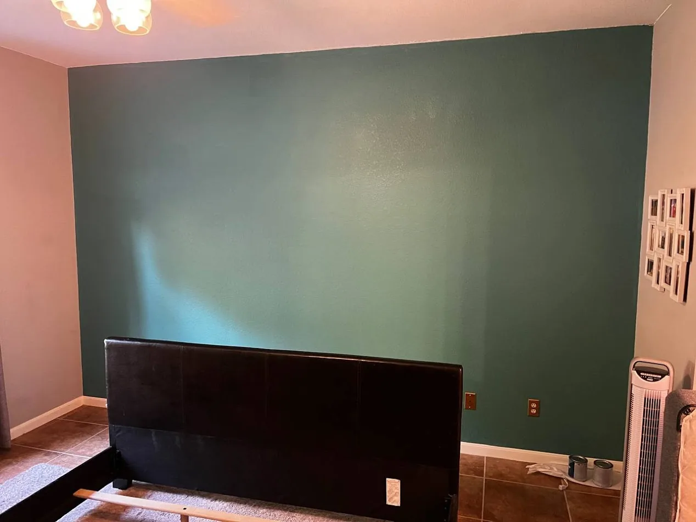
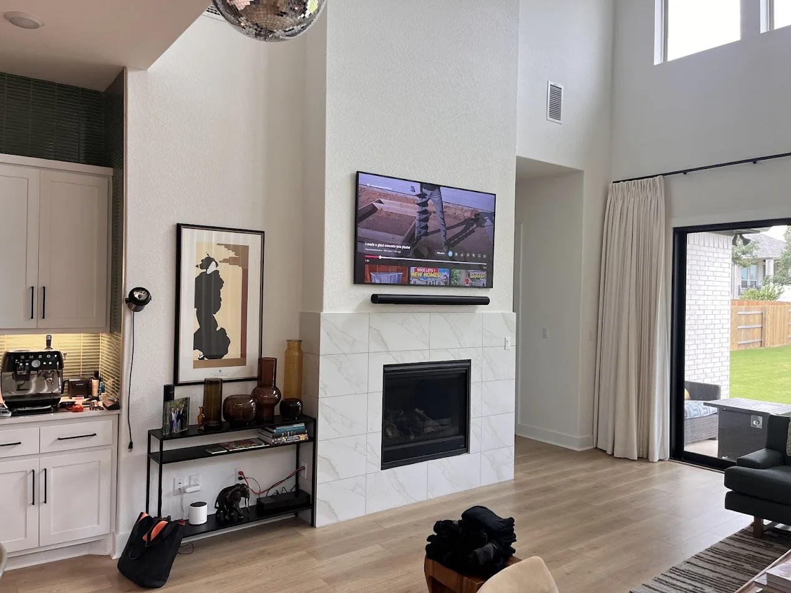
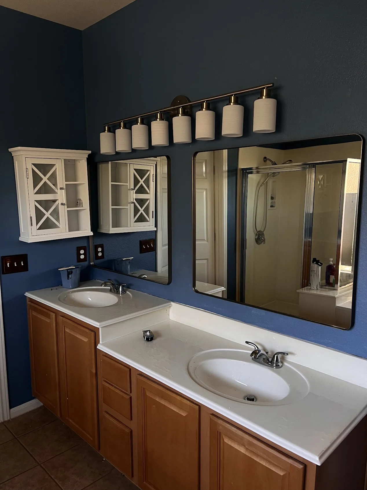
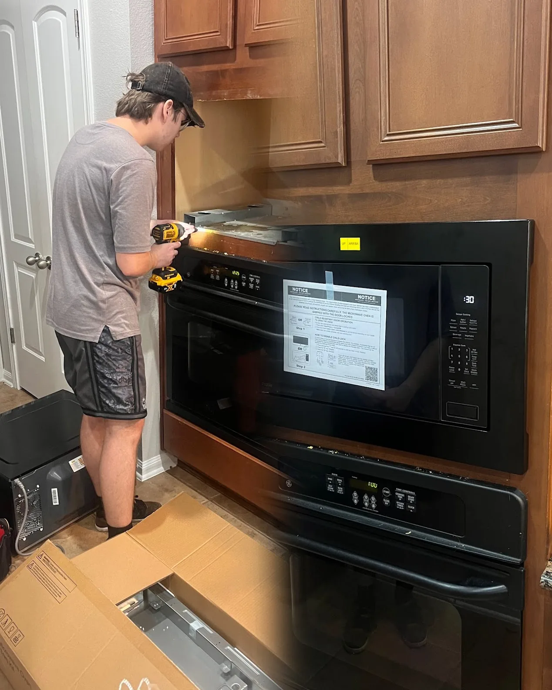

Wood Fence & Gate — Our Signature Work
Wood Fence Installation Cedar Park, TX
We install cedar privacy fences — the most popular choice for Cedar Park and Leander homeowners. Every post is set in concrete, every board is carefully installed, and every fence is built to stand up to Texas summers, storms, and years of use.
Every fence and gate is installed by our experienced local team — posts set right, boards straight and secure, and built to last the first time.
What's Included
- Free on-site measurement & estimate
- Cedar or treated wood — your choice
- Posts set in concrete for stability
- Privacy, picket, or horizontal styles
- Gate included if needed
- Job site cleaned of install debris
- Experienced local team on every job
Free written estimate always provided.
Old fence haul-away available as a paid add-on.
Gate Installation & Repair
From single walk gates to large double drive-through gates — Gene builds and installs them all. Custom-fit to your fence, properly aligned so they open and close smoothly for years. Already have a gate that sags, drags, or doesn't latch right? Gene can repair most gates quickly and affordably.
Gate Services Include
- Single walk gates (36"–48")
- Double drive gates (8'–16'+)
- Custom-built gates to match your fence
- Heavy-duty hardware & hinges
- Gate re-hanging & alignment
- Latch replacement & adjustments
- Sagging gate repair
More Ways Gene Can Help
Full-service handyman for Cedar Park, Leander, Round Rock, Georgetown & Austin, TX.

Fence Repair
Storm damage, broken boards, leaning posts, rotted sections. Matched to your existing fence style.
- Board replacement
- Post repair & replacement
- Storm damage repair
- Section rebuilds

Door Installation & Repair
Interior and exterior doors installed perfectly. Sticking, drafty, or broken doors repaired. Hardware included.
- Exterior door installation
- Interior door installation
- Door adjustment & planing
- Hinge & hardware replacement

Deck & Porch Repairs
Restore your outdoor living space. Rotted boards replaced, railings secured, structural issues fixed right.
- Deck board replacement
- Railing repair & tightening
- Post repair
- Stair repairs

Custom Furniture & Built-Ins
Live edge tables, built-in shelves, floating shelves, custom cabinetry — designed and crafted to fit your space.
- Live edge dining tables
- Built-in shelving & cabinets
- Floating shelves
- Closet systems

Drywall, Painting & Remodeling
Holes, cracks, water damage repaired. Interior painting done clean. Full remodeling quotes available.
- Hole & crack patching
- Texture matching
- Interior painting
- Kitchen & bathroom remodeling

TV Mounting & Assembly
TV mounted safely on any wall type. Furniture assembly — IKEA, custom pieces, anything.
- TV wall mounting (all sizes)
- Cord concealment
- Furniture assembly
- Shelving assembly

Plumbing Repairs
Common plumbing fixes done fast and clean. Labor only — you supply the fixture, we install it right.
- Faucet & shower head replacement
- Garbage disposal
- Toilet replacement
- Sink replacement

Security Cameras & Appliances
Security camera installation, microwave replacement, and other appliance installs handled cleanly and professionally.
- Security camera install
- Microwave replacement
- Over-the-range & built-in
- General appliance install
Quick Pricing Reference
All prices include labor. Materials noted separately. Free written estimate always provided before work begins.
Custom Woodwork & Remodeling
| Service | Price | Notes |
|---|---|---|
| Custom furniture & built-ins | By quote | Tables, shelves, cabinets — unique pieces made to order |
| Custom structures (decks, pergolas, gazebos) | By quote | Free on-site estimate · Cedar Park & Greater Austin |
| Remodeling | By quote | Kitchen, bathroom, interior — contact for consultation |
Fences & Gates
| Service | Price | Notes |
|---|---|---|
| Fence section replacement | From $350 | All materials included |
| Post replacement | From $250 | All materials included |
| Gate installation (new) | From $400 | All materials included |
| Gate repair / adjustment | From $170 | Alignment, hardware, sagging |
| Full fence installation | Custom quote | Free on-site estimate · Cedar Park area |
Doors
| Service | Price | Notes |
|---|---|---|
| Door installation — interior | From $260 | Interior doors |
| Door installation — exterior / entry | From $450 | Exterior & entry doors |
| Door repair | From $170 | Sticking, frame, hardware |
Handyman Services
| Service | Price | Notes |
|---|---|---|
| Handyman hourly rate | $95/hr | 2-hour minimum |
| TV mounting | From $125 | All wall types |
| Security camera installation | From $125 | Per camera |
| Microwave replacement | From $215 | Over-the-range or built-in |
Plumbing Repairs
| Service | Price | Notes |
|---|---|---|
| Faucet replacement | From $125 | Labor only · customer supplies fixture |
| Shower head replacement | From $125 | Labor only |
| Garbage disposal replacement | From $170 | Labor only |
| Toilet replacement | From $215 | Labor only |
| Sink replacement | From $350 | Labor only |